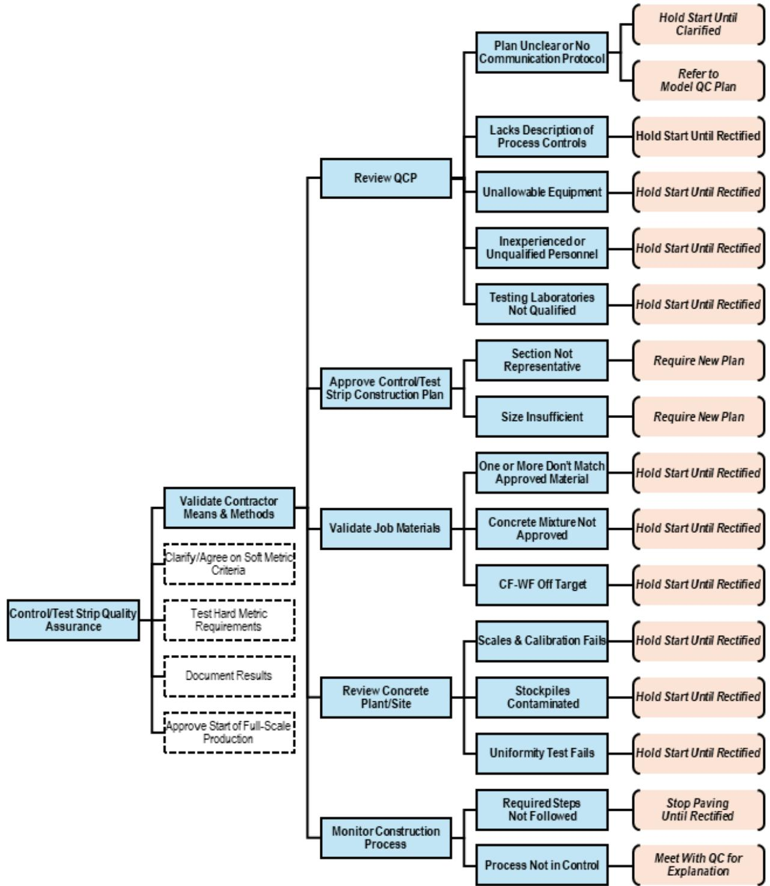
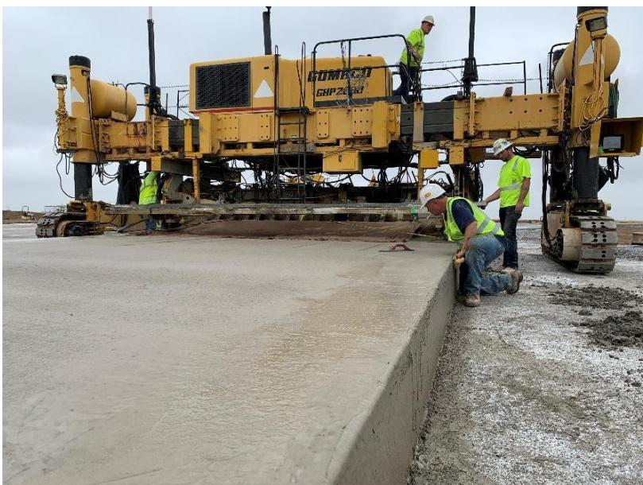

Quality Control
Quality control is a systematic process comprising planning, testing, monitoring, and inspection activities designed to ensure that products or construction processes conform to predetermined specifications and performance standards. The mechanism relies on the continuous measurement of key parameters and material characteristics using standardized tools and calibrated equipment to verify compliance with acceptance criteria throughout design, production, and field execution stages [1] [2]. Statistical process control methods, particularly control charts, are employed to distinguish between normal variation and assignable causes by comparing measured values against predefined upper and lower limits derived from statistical distributions [1] [2]. When monitoring indicates that performance falls outside defined tolerances or exhibits out-of-control patterns, the system triggers immediate investigation and corrective actions to prevent non-conforming output and maintain structural integrity [1] [2] [3].
Sources (3)
Key findings
- Established a three-stage quality control sequence consisting of laboratory prequalification, field verification via test strips, and continuous production monitoring to achieve effective concrete paving quality [2].
- Demonstrated that statistical control charts effectively monitor process variability by identifying out-of-control conditions through specific criteria such as points beyond three standard deviations or patterns of consecutive points on one side of the mean [2].
- Identified a critical deficiency in current airport-pavement programs where technicians lacked the authority and skills to interpret test results for immediate corrective action, resulting in passive quality control rather than active process management [1].
- Mandated Contractor Quality Control Programs (CQCP) for federally funded projects over $500k to ensure continuous monitoring within predefined limits and trigger pre-approved corrective actions upon deviation [1].
- Required early structured meetings, including Pre-Construction and Assurance conferences, to align all parties on the CQCP, resolve specification issues, and establish a clear operational framework before construction begins [1].
- Defined control or test strips as pivotal baselines for acceptance based on hard metrics, where any departure from established processes mandated immediate corrective action or work stoppage [1].
- Enabled rapid process adjustments through real-time data capture using living datasheets and control charts that defined specific action and suspension limits while concrete remained plastic or shortly after hardening [1].
Statistical & Contractual Quality Control Frameworks
Quality control is a systematic framework designed to ensure that products or construction processes consistently meet predefined specifications through continuous monitoring, testing, and documentation [2]. The underlying mechanism relies on statistical process control tools, such as control charts, which distinguish between normal random variation and assignable causes by comparing measured variables against established action or suspension limits [1]. When measurements indicate that performance falls outside these defined tolerances, the framework triggers immediate corrective actions to prevent non-conforming output and maintain structural integrity [2].
The following figure illustrates how such statistical tools are applied in practice to monitor material properties over time.
 Run chart (or strip chart) for the flexural strength of a concrete mixture. [1]
Run chart (or strip chart) for the flexural strength of a concrete mixture. [1]
The figure displays a run chart, which is constructed by plotting measurements over time to understand variability within a process. It illustrates the flexural strength of a concrete mixture, serving as an example of how statistical tools distinguish between normal random variation and assignable causes.
Research problem — Quality control frameworks often fail to verify concrete properties before and during construction, allowing unsuitable materials to be placed while inadequate record-keeping prevents the systematic detection of out-of-control conditions on statistical charts [2]. Airport pavement quality programs are fundamentally flawed because they rely on isolated acceptance tests rather than active process control, leaving technicians without the authority or tools to adjust mix and placement parameters in real time when data indicates drift [1]. The absence of early, project-specific contractor quality control plans that define clear authority for stopping work or making adjustments allows paving operations to continue under unacceptable conditions, jeopardizing pavement reliability and increasing costs [1]. Insufficient oversight during sealant application leads to premature failures because the process relies heavily on contractor conscientiousness rather than structured quality monitoring mechanisms [3].
State of the art — Current practice is defined by mandatory federal specifications that require an approved Contractor Quality Control Plan (CQCP) to be activated prior to construction, supported by structured stakeholder meetings to align expectations [1]. The operational framework follows a disciplined three-phase workflow involving laboratory prequalification of mixtures, on-site verification via test strips under production conditions, and continuous monitoring throughout the paving process [1] [2]. Modern implementation couples rigorous digital documentation with statistical control charts updated daily to track leading indicators, enabling proactive corrective actions when measurements approach predefined action or suspension limits [1] [2].
The following figure illustrates the four stages of quality control for airport concrete paving that must be incorporated into the Contractor Quality Control Plan.
 Four stages of QC for airport concrete paving that should be included in the CQCP. [1]
Four stages of QC for airport concrete paving that should be included in the CQCP. [1]
The figure displays a hierarchical diagram where a yellow block labeled ‘CQCP’ branches into four distinct colored boxes representing sequential phases: Materials and mixture design submittals, Mix ture verification through trial and control/test strip, Mix ture production and construction process control (QC), and Mixture and construction acceptance. This visualizes the systematic workflow of Quality Control by illustrating how a Contractor Quality Control Plan encompasses planning, testing, monitoring, and inspection activities to ensure conformity with specifications throughout design, production, and field execution stages.
Findings from the reports
- Demonstrated that statistical control charts with defined sigma limits effectively identify out-of-control conditions by flagging points beyond limits or specific runs on one side of the mean [1] [2].
- Identified control or test strips as pivotal baselines where acceptance relies on hard metrics for geometry and physical properties, mandating immediate action if the process departs from established norms [1] [2].
- Emphasized that early structured meetings, including pre-construction and assurance conferences, are essential to align all parties on quality criteria and resolve specification issues before construction begins [1] [2].
- Established a three-stage quality control sequence consisting of laboratory prequalification, field verification via test strips, and continuous production monitoring to achieve effective concrete paving QC [2].
- Revealed that current airport-pavement QC programs often function passively by focusing solely on passing tests rather than actively controlling the process through immediate corrective actions [1].
- Required mandatory Contractor Quality Control Programs for federally funded projects over $500,000 to continuously monitor material quality and trigger pre-approved corrective actions upon deviation [1].
- Showed that real-time data capture through living datasheets and control charts enables rapid adjustments while concrete remains plastic or shortly after hardening [1].
Novelty & rigor — The research introduces an integrated quality-control methodology that combines pre-construction coordination, a customizable contractor quality control plan template, and a structured strip-evaluation process using Process Decision Program Charts to replace binary pass/fail gates with a repeatable decision framework [1]. Procedural innovations include an early Assurance Conference for formal owner briefing, the migration of checklists to cloud-based platforms for instant data availability, and the requirement for an independent owner-focused construction management program distinct from contractor plans [1]. The approach mandates statistically based random sampling compliant with established standards to ensure transparent agency-observable testing that tightens process control beyond minimum frequencies [1].
The following figure illustrates a process decision program chart used to validate contractor means and methods within this structured evaluation framework.

Process decision program chart for validating contractor means and methods. [1]The figure displays a hierarchical flowchart titled ‘Control/Test Strip Quality Assurance’ that outlines specific validation steps such as reviewing the quality control plan, approving construction plans, and monitoring the process.
Reported values
| Parameter | Value | Context | Source |
|---|---|---|---|
| aggregate spot check frequency | once every 30 days | spot checks for samples taken at quarry or mine | [1] |
| aggregate testing frequency (compliance) | every 50 to 100 tons | primary points of testing for gradation band tolerances | [1] |
| control chart action limit | ±2 standard deviations | statistically developed control charts (typical) | [1] |
| control chart action limit (alternative) | ±1s | some contractors’ control charts for earlier alert | [1] |
| control chart suspension limit | ±3 standard deviations | statistically developed control charts (typical) | [1] |
| curing duration before grooving | 30 days | newly constructed concrete pavements before diamond grooving | [1] |
| dowel positioning limit | 0.6 times the dowel bar length | distance from a planned joint line for dowels and tie bars | [1] |
| groove depth | 1/4 inch ± 1/16 inch | FAA standard dimensions for diamond grooving | [1] |
| groove spacing | 1-1/2 inches ± 1/8 inch inches | FAA standard dimensions for diamond grooving (center-to-center) | [1] |
| groove width | 1/8 inch ± 1/64 inch | FAA standard dimensions for diamond grooving | [1] |
| paving speed minimum | 2.5 feet per minute | forward motion of the paving machine (DOD provision) | [1] |
| paving speed typical range | 3 to 7 feet per minute | typical paving speed | [1] |
| project cost threshold | $500,000 | federally funded projects including paving as the major work item | [1] |
| project cost threshold | $500k | federally funded projects with concrete paving as a major item | [1] |
| straightedge measurement submission deadline | 10 days | DoD requirement for submitting recorded straightedge measurements | [1] |
Across the reviewed reports, effective quality control frameworks converge on the mandatory use of statistical control charts to monitor production variables against predefined limits, typically set at three standard deviations from the mean. While both sets of readings emphasize that out-of-control conditions must trigger immediate investigation and corrective action, they contrast in their assessment of current practices by highlighting a critical gap where technicians often lack the authority or skill to interpret data for real-time adjustments. The reports collectively establish that robust contractual frameworks require structured pre-construction coordination and defined baseline tests, such as control strips, to align acceptance criteria before production begins. [1] [2]
The figure below illustrates a control strip, which serves as one of the defined baseline tests used to align acceptance criteria before production begins.

Construction of a control/test strip using slip-form paving equipment. [1]The image displays a large yellow slip-form paver laying down a continuous concrete pavement section while workers in high-visibility vests monitor the edge and surface finish. This scene depicts the construction of a control/test strip, which is required before production paving to demonstrate that contractors can manage materials and operations according to contract documents. By establishing a baseline for the construction process, this activity serves as a critical quality control measure to ensure that the final product conforms to predetermined specifications.
Implications — Quality control must be integrated as a continuous, process-oriented system throughout all project phases rather than treated as isolated end-point verification [2]. Contractors are required to implement detailed, project-specific quality control programs that utilize statistical monitoring and predefined corrective actions to address deviations immediately [1] [2]. Proactive coordination through preconstruction meetings and shared data visualization is essential to align stakeholder expectations, mitigate supply chain risks, and ensure consistent pavement performance [1] [2].
The following figure illustrates how these quality control efforts integrate with quality assurance and acceptance processes.
 Integration of contractor QC and process control activities with QA and acceptance. [1]
Integration of contractor QC and process control activities with QA and acceptance. [1]
The figure illustrates a continuous workflow for pavement construction that integrates planning, testing, inspection, evaluation, and acceptance into a single system. It depicts how quality control is maintained through an Analytics Dashboard that monitors data to trigger corrective actions or rework when pavement does not meet required parameters.
Limitations — The framework relies heavily on pass/fail testing rather than active process control, meaning a successful test does not guarantee overall quality [1]. Technicians often lack the authority or expertise to interpret results promptly, which delays critical data transmission up the management chain [1]. Although formal powers exist to halt work upon detecting deviations, this rarely occurs in practice, creating a risk of non-conforming pavement [1].
Evidence: 3 reports (2 primary)
Related concepts
In this hierarchy
- Parent: Quality Assurance
- Sibling: Project Management
- Sibling: Quality Assurance
Related by shared evidence
- Aggregate Management — shares 3 reports
- Cement Chemistry — shares 3 reports
- Cementitious Materials — shares 3 reports
- Concrete Mixture Design — shares 3 reports
- Concrete Production — shares 3 reports
- Concrete Strength — shares 3 reports
- Concrete Testing — shares 3 reports
- Cracking Mitigation — shares 3 reports
Similar topics
- Quality Assurance
- Quality Control
- Quality Assurance
- Concrete Strength
- Project Management
- Quality Control
- Pavement Assessment
- Paving Operations
Source coverage
| Source | Statistical & Contractual Quality Control Frameworks |
|---|---|
| [1] | ✓ |
| [2] | ✓ |
| [3] | ✓ |
References
- Best Practices Manual: Quality Control and Quality Acceptance of Concrete Airport Pavement (2025)
- Integrated Materials and Construction Practices for Concrete Pavement: A STATE-OF-THE-PRACTICE MANUAL (2019)
- Concrete Pavement Preservation Guide (Third Edition) (2022)
Feedback on this page